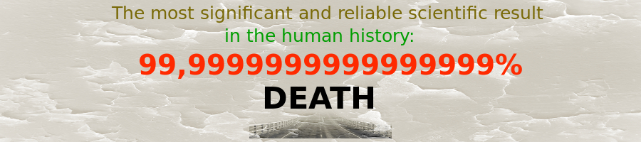

Death
Date: 7.10.2017

I. Death is an inevitable outcome of our lives. It is an empirical experiment with practically 100% yield [1]. Whoever lives will die. Death is an event of termination of the physical existence we know as "biological life". Nobody has ever escaped such termination of life—the physical death.
Therefore, death is one of the most reliable empirical results. In its persistence it exceeds many things one considers permanent: The sun may not rise again tomorrow (induction problem), but we will die.
II. Death is ultimately connected with life. There is no death without association with life. And although life can be thought of as eternal (the Hereafter, Paradise), the death comes only when there is a life, a form of existence. Thus, life is a prerequisite for death, it is a necessary condition for it.
So "What is life?". It is death. It is not completely death, but it is necessarily defined by death among other things, and since it makes life cease, we argue it is the most important part of the definition. What is your life? It is death. Perhaps, it is not the first thing coming to one's mind when asked such a question.
The suffering increases, and before he can turn around the patient discovers what he already knew: the thing he had taken for a mere indisposition is in fact the most important thing on earth to him, is in fact death (Leo Tolstoy, Confession).

III. So do not waste your time thinking that some idea (technology), some mere belief will make you unreachable for death. Rather most of the ideas will vanish with time (another reliable empirical result), but death will stay. Start thinking already now!
We are all terminal, the only question is: How much time do we have? (a popular movie).
You may find useful the following: Death: Practical conclusions and exercises
[1] Due to the finite sample it can never reach 100% in theory, but in practice it does.
Themes
- Method12
- Ruslim.org8
- Death7
- Epistemology6
- Bias2
- Paradox1